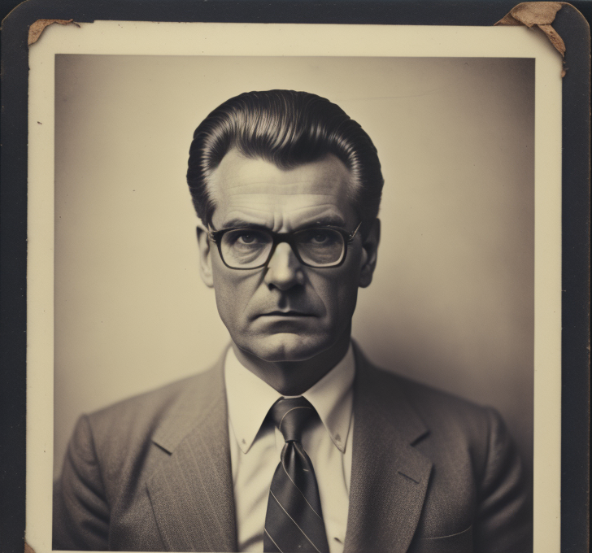
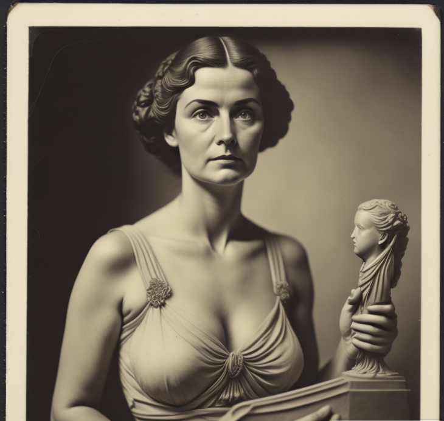

Hay dos principales sospechosos sobre la muerte de Mr. Sterling. ¿A quien quieres interrogar primero?

Charles Easelton: El tesorero de la galería y mano derecha de Mr. Sterling.

Victoria Vernissage: Una artista talentosa cuya obra más reciente fue rechazada por Mr. Sterling para la exhibición.